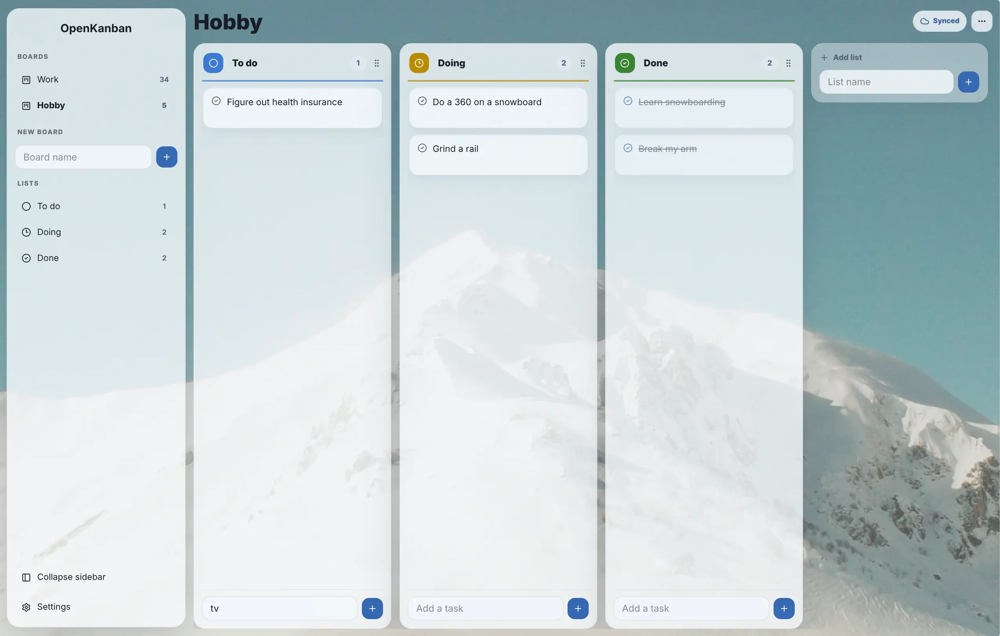
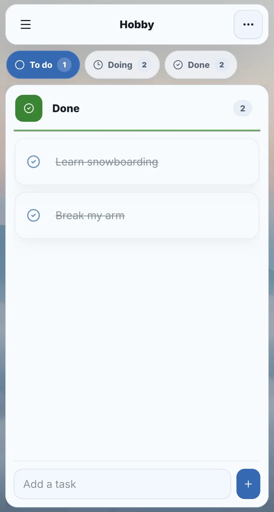

Multiple boards
Keep separate boards for different projects and workflows.
OpenKanban is a straightforward board app for organizing projects, lists, and tasks across clear stages.


Keep separate boards for different projects and workflows.
Add, rename, color, and reorder the stages on each board.
Add descriptions and due dates, then mark work done.
Move tasks with drag and drop, keyboard controls, or list actions.
Keep boards synced between devices with a local recovery copy.
Give each board its own color or wallpaper and use Transparent UI.